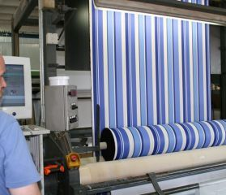
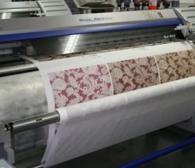
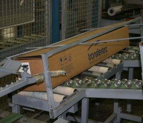
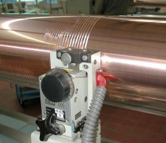
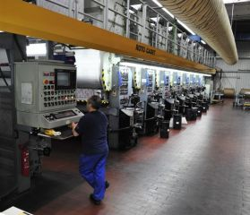
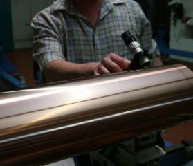
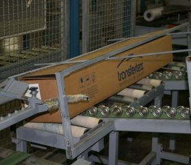
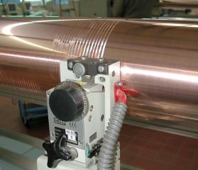
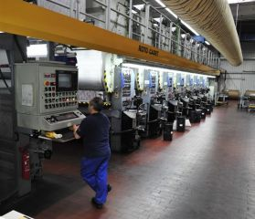
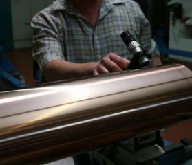

Our Vow!
We’re a team of artists, designers, trend hunters, tinkerers and takeout critics, working around the clock to make Cromohouse the most powerful apparel and interior print service in the universe.
Transfer printing to be in the lead we offer our customers gold/silver foil printing, embossing and placement or continuous digital printing services in-house. We are proud to cooperate with world’s best and largest company in both production and sales of transfer printing paper, TRANSFERTEX GmbH & Co. Holding the largest design stock throughout Turkey our goal is to put forward the same printing quality and color identity both at meter and millionth. Transfer printing, is also known as thermo printing, dry printing or sublimation printing, is a relatively recent, state-of-the-art technology for printing textiles. The process, which was newly discovered in 1957, was further developed over subsequent 10 years to a point for industrial application. Since then, this technology has become widespread throughout the world. Groups of transfer print users and the installation of several thousand transfer calendar presses in the textile industry in many countries have experienced to the extraordinary and rapid expansion of this process. The constantly increasing proportion of transfer printing in relation to textile printing as a whole lies in the fact that it has decisive advantages over conventional wet printing of textiles. But enough about us—let's talk about you. Whether you own a retail house or fabric wholesaler, you need a printing service that takes care of the complicated stuff so you can focus on your job.
 
 






